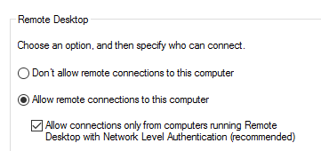

# Using credentials - from Unix - via RDP
RDP is great but noisy.
You run the risk of kicking a user off if they're already logged in.
Check for RDP access:
rdpcheck.py DOMAIN/username:password@10.10.10.10## rdesktop
-g - the screen will take up 70% of your actual screen size
-r disk:share - sharing a local folder during a remote desktop session
rdesktop -d DOMAIN -u username -p password 10.10.10.10 -g 70Share a local folder
• Access via
\\tsclient\<share name>\file.txt or just browse to it via My Computer
rdesktop 10.10.10.10 -u username -p password -r disk:<sharenname>=<share location>rdesktop 10.10.10.10 -u username -p password -r disk:PWN='./pwnshare'Errors
Failed to initialize NLA, do you have correct Kerberos TGT initialized ?
Failed to connect, CredSSP required by server
Means this box is ticked on the target (security gets downgraded if unticked)
Easy solution = use xfreerdp
## xfreerdp
xfreerdp /v:10.0.0.1 /u:Administratorxfreerdp /v:10.0.0.1 /u:Administrator /p:Password123!Share a local folder
• Access via
\\tsclient\<share name>\file.txt or just browse to it via My Computer
mkdir pwnsharexfreerdp /v:192.168.88.10 /u:Administrator /p:Password123! /drive:PWN,./pwnshare